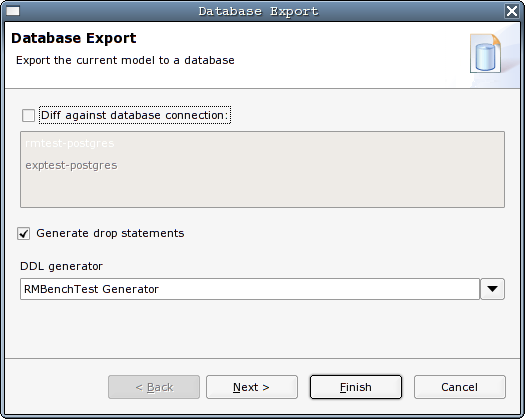
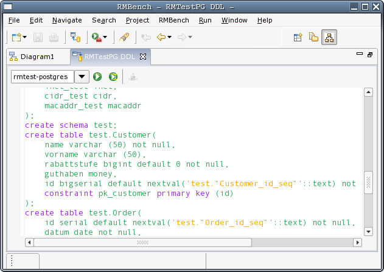
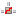
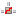

). This will open the export
wizard, as shown below:
). This will open the export
wizard, as shown below:Forward engineering means generating SQL DDL (Data Definition
Language) code from the current model and executing it against a
database system. RMBench provides 2 paths to forward engineering:
You start the forward engineering process by pressing the export
button (). This will open the export
wizard, as shown below:

On the first page of the export wizard, you choose whether you want
to simply generate DDL, or perform a mode comparison. You can also
determine the DDL generator that will be used. There is currently only
one general purpose DDL generator available as part of the stock
RMBench distribution. However, it is fairly easy to extend RMBench with
new DDL generators.
The next wizard page shows you the configuration options for the DDL
generator, if the generator provides a configuration page. The standard
SQL DDL generator that comes as part of the stock RMBench distribution
allows you to make choices regrding uppercasing and quoting of
identifiers.
If you did not check the Diff
option on the first page of the wizard, pressing the Finish button takes you directly to
the DDL editor:

The DDL editor shows the SQL DDL statements that will create the
physical database that mirrors the design model. The syntax coloring
for the editor can be configured using the RMBench
preference pages.
The combo box in the left corner of the editor toolbar lets you
choose the database to which the DDL will be executed. As you may
recall, database connections are configured
in the Import View. You can execute the
complete script by pressing the ( )
button. Alternatively, you can position the cursor anywhere inside the
DDL script and execute the current statement using the (
)
button. Alternatively, you can position the cursor anywhere inside the
DDL script and execute the current statement using the ( ) button. In either case, if the
database connection is not already established, it will be opened
implicitly. Depending on how you configured the database, this meay
lead to the appearance of a login dialog. Once you are finished, you
can use the () button to close the connection.
) button. In either case, if the
database connection is not already established, it will be opened
implicitly. Depending on how you configured the database, this meay
lead to the appearance of a login dialog. Once you are finished, you
can use the () button to close the connection.
Of course, you can edit the script before executing it, and you can
save the results to disk at any time.